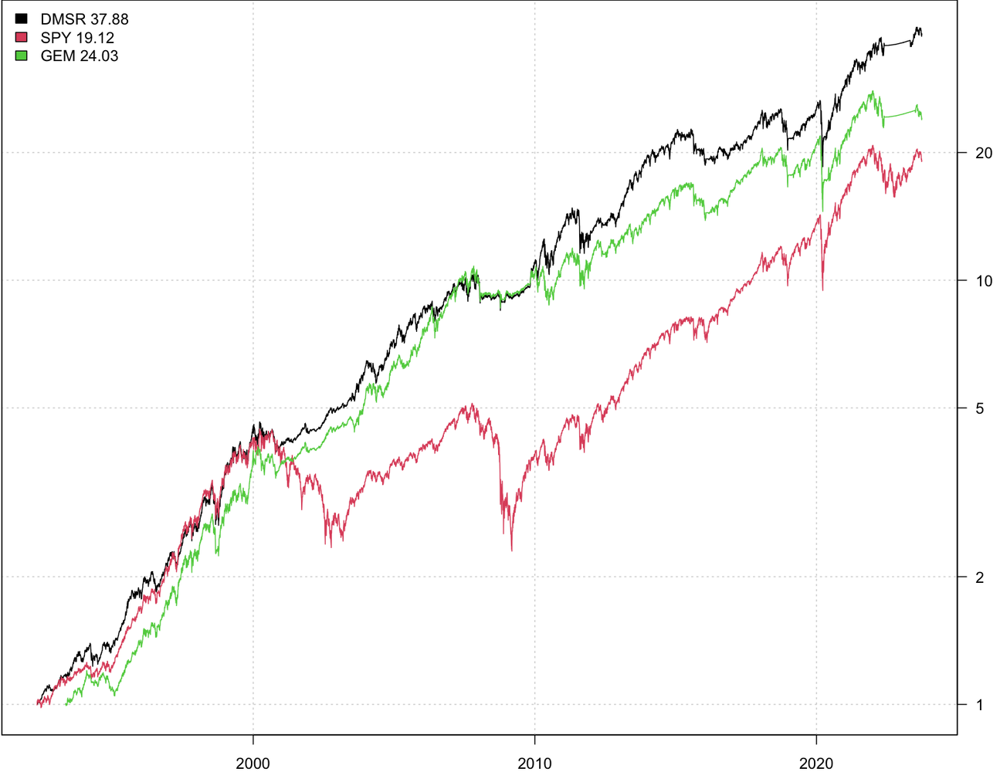
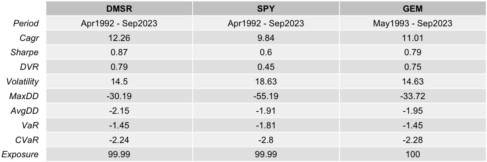
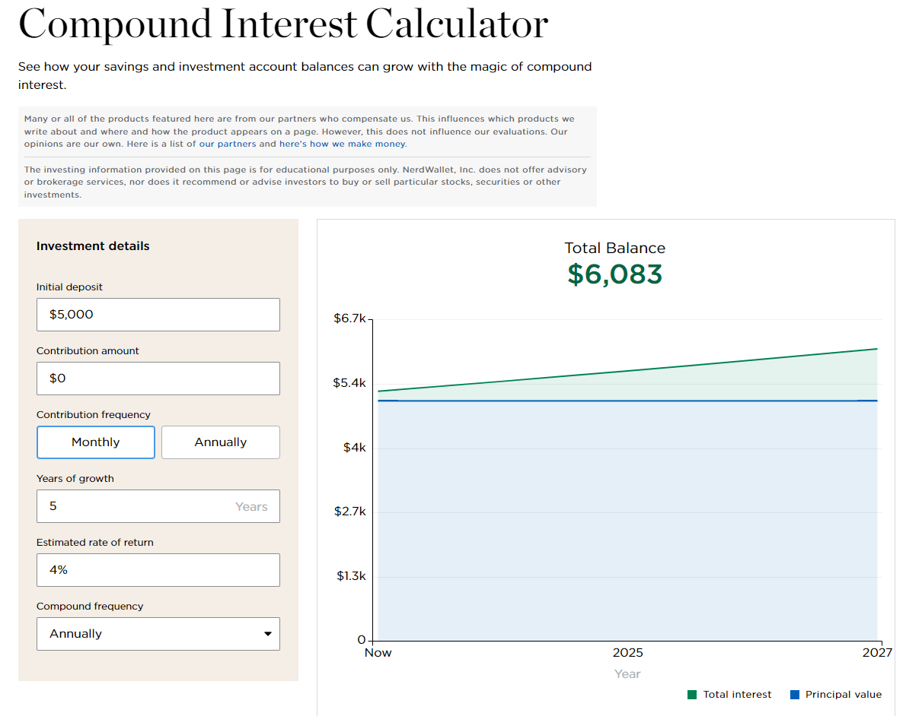

Investing
Misc
Resources
- Tidy Finance - R and Python versions
- Advances in Financial Machine Learning - de Prado (R >> Documents >> Financial)
- Machine Learning for Algorithmic Trading
- Github repo with the code that’s referred to in the book
Packages
- CRAN Task View
- {{zipline-reloaded}} - Backtesting and live-trading engine by crowd-sourced investment fund Quantopian
- {{pyfolio}} - Performance and risk analysis for financial portfolios
- {{skfolio}} - Portfolio optimization built on top of scikit-learn. It offers a unified interface and tools compatible with scikit-learn to build, fine-tune, and cross-validate portfolio models.
- {{alphalens}} - Performance analysis of predictive stock factors
Tools
For portfolio construction in general, positions are optimized using Expected Returns, Return Variance (i.e. volatility), and Co-Movements (i.e. covariance) in order to maximize Risk Adjusted Returns.
Technical vs Fundamental Analysis
- Technical analysis in many cases tends to amplify stock price trends because many technical traders buy when stocks are rising and sell when they fall.
- Fundamental analysis on the contrary often shows mean-reverting behaviour because its adherents try to buy undervalued stocks and sell overvalued ones
Smoothers
- Simple Moving Average (SMA) is simple, easy to implement but reacts slowly to recent price changes due to equal weighting of all prices in the window.
- Exponential Moving Average (EMA) reacts faster to recent price changes due to more weight to the latest prices.
- Kalman Filter is more sophisticated and can adaptively weigh incoming measurements based on their estimated noise level, potentially providing superior results in many applications. However, it has key parameters that must be tuned to get good results.
Strategies
- Notes from
- Hedgefund - factor rotations (longer term)
- Something about futures - factor tilts (shorter term)
- Harvesting Risk Premia
- Should be the primary focus of independent traders.
- General Process
- Intentionally expose your portfolio to diverse sources of risk that tend to be rewarded (noting that not all risks are rewarded)
- Manage risk sensibly so no risk dominates at any time
- Be patient and chill (the hardest part for most)
- Examples: 60/40 stock/bond portfolio
- Economically-sensible, statistically-quantifiable slow-converging inefficiencies
- These are noisy tendencies for assets to trade too cheap or expensive at certain times due to behavioral or structural effects. Slow to converge and must be analyzed in aggregated datasets. Generally, these edges are less reliable than risk premia harvesting.
- After mastering Harvesting Risk Premia, add a little of this over time.
- Requirements
- To understand why the inefficiency would persist.
- Faster converging metrics around what we’re exploiting so we’re not the last to know when the inefficiency disappears.
- Patience and discipline to keep swinging the bat – you have to let the noisy edge play out over a large number of bets.
- Examples: Momentum effects, seasonal regularities, effects due to indexing inclusion/exclusion, probably style factors (momentum, value, carry, quality, low vol), and most medium frequency statistical arbitrage approaches.
- Resources
- Expected Returns by Antti Ilmanen
- Efficiently Inefficient by Lasse Pedersen
- Positional Option Trading by Euan Sinclair (which literally gives you stuff to trade)
- Active Portfolio Managementby Grinhold and Kahn
- Fast-converging supply-demand imbalances
- Short term supply and demand imbalances create dislocations in prices which fast traders can “disperse” by trading against them and offsetting risk elsewhere. It carries risks because we can’t trade instantaneously.
- Require significant investment in infrastructure and staff, so isn’t practical for “home gamers.”
- Examples
- Arbitrage: Buy futures on Shanghai INE and buy a similar contract cheaper on Singapore SGX for a profit (after costs).
-
- No transaction costs
- No fees
- No taxes
- US “exceptionalism”
- Overlapping time period analysis
- Example: if I look at 1920-1950 and then 1921-1951, twenty eight of the thirty data points are overlapping. So there’s not a lot of “unique” data in this set.
- Nominal vs real returns - Time weighted vs dollar weighted returns
Workflow
From Machine Learning for Algorithmic Trading Any market forecasting model, especially involving short term horizons, should probably have a random walk in an ensemble. (Is the Market Just Random Noise?)
{kind=link}
{kind=link}
Considerations
- Costs that need to be accounted for when backtesting
- Transaction costs
- Fees
- Slippage
- Taxes
- A model that performs well in a specific market condition may incur substantial losses when the market shifts, be it due to news, events, or economic changes.
- See Finance, Snippets >> Misc >> Test Assumptions
- Beware of survivorship bias when backtesting algorithms
- Example: S&P 500
- A trader is creating an algorithm to predict prices of all the stocks in the S&P 500. If the trader uses the current roster of companies, the list only includes companies that have made it to now without shutting down or losing so much value they drop off the list. The trader should use the list of companies as it was at the start of the training data.
- Example: S&P 500
- Use proper stop-loss and position sizing strategies to manage risk
- Iteratively using the same data to design and modify a strategy can lead to overfitting, where the strategy becomes overly tailored to the data and performs poorly in real-world trading.
- Ignorance of macro-economic indicators and trends can result in unexpected market moves, significantly impacting algorithmic strategies and their performance.\
- There are 435 choices for start and end dates of each monthly investment cycle
- i.e. Easy to have a selective endpoints fallacy for an investment strategy.
60/40 Portfolio Strategy
- Misc
- {{QSTrader}}
- Notes from - The 60/40 Benchmark Portfolio
- Description
- 60/40 US Equities/Bonds strategy is a simple long-term investment approach that is widely utilised in the investment industry. It seeks to ensure that at any point during the lifetime of the investment that 60% of account equity is invested in one or more assets representing a broad selection of US equities (such as an S&P500 ETF), while 40% of account equity is invested in one or more assets representing a broad selection of US treasury bonds (such as a treasury bond ETF).
- Since the actual percentage allocations of each asset class can deviate over time due to relative growth of the respective assets a ‘rebalance’ approach is often carried out. This means that trades are issued on a relatively infrequent basis to buy/sell amounts of each asset class to periodically bring the account equity allocations back into the 60/40 split. For the particular strategy implemented here we are using an end of month rebalance frequency.
- More balanced implementations include Bridgewater’s All-Weather portfolio and Risk Parity strategies generally, which attempt to equalize risk across assets or sources of risk premia.
Momentum Tactical Asset Allocation Strategy
- Misc
- {{QSTrader}}
- Notes from
- Description
- The US sector momentum strategy is a long-only dynamic tactical asset allocation strategy that attempts to exceed the performance of simply going long the S&P500.
- At the end of every month the strategy calculates the holding period return (HPR) based momentum of all of the SPDR sector ETFs (the ticker symbols of which begin with the prefix XL) and selects the top N to invest in for the forthcoming month, where N is usually between 3 and 6.
- In the implementation given here the HPR momentum is calculated over the previous 126 days (approximately six months of business days) and the top three sector ETFs are chosen for the portfolio.
- The portfolio allocation is equally weighted between each of these three sector ETFs. Irrespective of changes in signal the portfolio is rebalanced once per month to weight the assets equally.
Dual Momentum Sector Rotation
- Notes from Simulation of Gary Antonacci’s Dual Momentum Sector Rotation Strategy
- Characteristics
- Conditions for investing offensively or defensively: the 12-month momentum of the S&P500 (absolute mom)
- List of offensive investment vehicles: the 11 sectors that make up the S&P500 index (relative strength)
- Number of sectors to be selected when the strategy is invested offensively: 4
- Sector selection criteria: 12-month momentum
- List of defensive investment vehicles: US Aggregate Global Bond or Money Market (Cash)
- Number of instruments to be selected when the strategy is invested defensively: 1
- Process
- 12-month momentum of the S&P500 used to decide whether the market is in an uptrend or a downtrend, i.e. to invest offensively or defensively.
- If the S&P500 is in an uptrend, invest offensively. In this case, the allocation is spread evenly over the 4 sectors with the highest 12-month momentum, 25% each.
- If fewer than 4 sectors have positive momentum, then the remainder not invested offensively is allocated to a defensive position.
- If the S&P500 is trending downwards (negative momentum), I invest defensively. In this case, I allocate the entire portfolio to US government bonds or the money market, depending on which market has offered the highest returns over the last 12 months.
- Those familiar with the GEM strategy will note that the author initially recommended using only US government bonds as a defensive asset. However, since interest rates have fallen so much over the last 10 years, since the publication of his study, it now seems more reasonable to compare the US government bond market with the performance of the money market, in order to select the market that offers the best risk/return trade-off.
- Calculate 12-month momentum: ( Price at the end of the month – Price 12 months ago ) / ( Price 12 months ago )
- Momentum calculations and any arbitrages are carried out at the end of each month.
- Comparison
- Cumulative Performance: DMSR vs. SPY vs. GEM
- Simple Cumulative Performance (%) is computed every month (I think)
- Rate of Return
\[ \text{RoR} = \frac{\text{Ending Value} - \text{Starting Value}}{\text{Starting Value}} \times 100 \] - Cumulative Performance (CP)
\[ \text{CP} = (1 + \text{RoR}_1) \times (1 + \text{RoR}_2) \times \cdots \times (1 + \text{RoR}_n) - 1 \]
- Rate of Return
- Simple Cumulative Performance (%) is computed every month (I think)
- Statistics

- Cumulative Performance: DMSR vs. SPY vs. GEM
{kind=link}
{kind=link}
Volatility Targeting Portfolio
- Misc
- Volatility targeting seeks to counter the fluctuations in volatility:
- It leads to leveraging a portfolio at times of low volatility, and scaling down exposures at times of high volatility.
- This approach targets a constant level of volatility, rather than a constant notional exposure.
- Volatility clustering is a key feature of financial asset returns:
- High volatility over the recent past tends to be followed by high volatility in the near future.
- Impact on Sharpe ratio
- Volatility targeting improves the Sharpe ratio of “risk assets” (equities and credit), and that of “balanced” and “risk parity” portfolios that have a substantial allocation to these risk assets.
- For equity and credit, volatility targeting effectively introduces some momentum overlay due to the so-called leverage effect: the negative relationship between returns and changes in volatility.
- In contrast, for bonds, currencies, and commodities the impact on the Sharpe ratio is negligible.
- Impact on likelihood of tail events
- Volatility targeting reduces the likelihood of extreme returns for all asset classes.
- Importantly, “left-tail” events tend to be less severe, as they typically occur at times of elevated volatility, when a target-volatility portfolio has a scaled-down notional exposure.
Mean Reversion Strategy or Pairs Trading
- Papers
- Pairs Trading Using a Novel Graphical Matching Approach
- Application of graph theory to the selection of stock pairs. Results in robust risk-adjusted performance but also achieves annualized returns comparable to the S&P 500 with a superior Sharpe ratio
- Selection based solely upon the significance of cointegration between pairs can result in portfolios overly concentrated in a limited number of stocks, which elevates portfolio variance and diminishes risk-adjusted returns
- Utilizes of graph theory to the selection of stock pairs to decrease variance with the t-statistic from a cointegration statistical test as the weight for the edges.
- Application of graph theory to the selection of stock pairs. Results in robust risk-adjusted performance but also achieves annualized returns comparable to the S&P 500 with a superior Sharpe ratio
- Pairs Trading Using a Novel Graphical Matching Approach
- Match two trading vehicles that are highly correlated, trading one long and the other short when the pair’s price ratio diverges “x” number of standard deviations - “x” is optimized using historical data. If the pair reverts to its mean trend, a profit is made on one or both of the positions.
- Chart the relative performance (price ratio)
- The center white line represents the mean price ratio over the past two years. The yellow and red lines represent one and two standard deviations from the mean ratio, respectively.
- The potential for profit can be identified when the price ratio hits its first or second deviation. When these profitable divergences occur it is time to take a long position in the underperformer and a short position in the overachiever. (i.e. shorting the stock that’s rising in relation to the other, and buying the other stock that hasn’t risen yet)
- The revenue from the short sale can help cover the cost of the long position, making the pairs trade inexpensive to put on.
- Position size of the pair should be matched by dollar value rather than number of shares; this way a 5% move in one equals a 5% move in the other.
- As with all investments, there is a risk that the trades could move into the red, so it is important to determine optimized stop-loss points before implementing the pairs trade.
- Chart the spreads between returns
- Look for stocks that move closely together and their:
- Spreads zig-zag around zero
- Prices separately (marginally) are normally distributed and joint-normally distributed (assumes linear correlation)
- If both, then they move up AND down together (symmetric)
- If only marginally, then they probably only move in one direction together (asymmetric)
- If your two assets returns (differenced prices are stationary) do not correlate within a [0.7..0.8] correlation coefficient range at least 70% of the times (70% of all observations) then you’re probably dealing with a very bad hedging instrument
- Look to cover the remaining data points and research why correlations broke down during those periods. If you can derive a mathematical relationship you could possibly formulate an approach in which you make adjustments to the hedge ratio through an adjustment in your beta/correlation coefficient.
- Figure out the optimal time interval to retrain model due to data drift
- Rolling 20-day correlation is a common way to monitor stock correlation
- Beware of two correlated stocks that have similar Beta or some other confounding variable
- Graphical LASSO can help remove effects such as market Beta and recover real, direct relationships between stocks.
- It makes intuitive sense that in a large universe, most stocks would be conditionally independent, and Graphical LASSO is able to refine this sparsity condition by tuning it’s only parameter
- See Association, General >> Partial Correlation for a stock example
- Graphical LASSO can help remove effects such as market Beta and recover real, direct relationships between stocks.
- Copulas
- See Association, Copulas
- Measures non-linear association
- For Value-at-Risk (VAR) calculations, Gaussian copula is overly optimistic and Gumbel is too pessimistic
- Copulas with upper tail dependence: Gumbel, Joe, N13, N14, Student-t.
- Copulas with lower tail dependence: Clayton, N14 (weaker than upper tail), Student-t.
- Copulas with no tail dependence: Gaussian, Frank.
- Cointegration allows us to construct a stationary time series from two asset price series, if only we can find the magic weight, or more formally, the cointegration coefficient β. Then we can apply a mean-reversion strategy to trade both assets at the same time weighted by β. There is no guarantee that such β always exists, and you should look for other asset pairs if no such β can be found.
- See Forecasting, Statistical >> Terms
- Cointegrated assets share common nonstationary components, which may include trend, seasonal, and stochastic parts
- Might have low correlation, and highly correlated series might not be cointegrated at all.
- Describes a long-term relationship between the prices (correlation describes a short-term relationship between the returns). The resulting stationary series is the spread between the prices of both assets
- Should have similar risk exposure so that their prices move together
- Good candidates for cointegrated pairs could be:
- Stocks that belong to the same sector.
- WTI crude oil and Brent crude oil.
- AUD/USD and NZD/USD.
- Yield curves and futures calendar spreads
Bonds
- Misc
- Resources
- NerdWallet Compound Interest Calculator
- Example: if you put $5,000 in a (5yr) bond with a 4% yield, assuming you reinvest your interest payments, you will have $6083 by the time it matures.

- Example: if you put $5,000 in a (5yr) bond with a 4% yield, assuming you reinvest your interest payments, you will have $6083 by the time it matures.
- NerdWallet Compound Interest Calculator
- Notes from
- The price of a bond moves in the opposite direction to interest rates.
- As rates rise, the value of older bonds with lower coupons declines.
- Most often, people will compare the 2-year Treasury with the 10-year. So, any generic mention of the spread, in a bond context, refers to the difference in yield between these two bonds.
- Bond traders buy existing bonds in the secondary bond market, and sell them at a discount to their face value.
- The amount of the discount depends partially on how many payments are still due before the bond reaches maturity.
- The price also is a bet on the direction of interest rates. If a trader thinks interest rates on new bond issues will be lower, the existing bonds may be worth a little more.
- Zero-Coupon Bonds (aka Discount Bonds)
- Owners receive no payments for their money until the bond has matured.
- They buy the bond for an amount that is less than its face value. When it reaches its maturity, they are paid the full face value of the bond.
- Most zero-coupon bonds have a pre-set face value and therefore pay a pre-set amount of money at maturity.
- Some bonds are inflation-indexed, meaning the face value is determined at maturity. The amount paid will be based on a standard measure such as the consumer price index plus a premium.
- Considered short-term investments that typically have a maturity of no more than one year. These short-term bonds are usually called bills.
- Resources
- Questions
- Should you buy the highest-yielding bonds, or is it better to lock in good rates for longer?
- Is it better to buy bonds directly from the government, a brokerage or as part of a bond fund?
- How much do I make on bonds after taxes and fees?
- How many bonds should I buy?
- Short-Term Bonds (e.g. 2-year Treasury)
- Pros:
- Higher yields (i.e. return) than long term bonds (e.g. 10-year Treasury)
- Cons:
- When interest rates are high, you lose the opportunity (i.e. by not buying longer term bonds) to lock in a potentially higher return for longer should rates drop in the future.
- Pros:
- Bond Ladder
- Divide your investments among bonds with progressively later maturity dates.
- Investors should also choose bonds based on savings goals and how soon they will need the money
- This takes advantage of both higher short term coupons and longer term yields.
- Divide your investments among bonds with progressively later maturity dates.
- Considerations
- Check a bond’s credit ratings before you buy. A poor rating means the bond issuer, such as a corporation, is less likely to pay you back.
- This can be enticing because the issuer will likely offer you a higher interest rate. It also means they are more likely to default, which would mean you lose money.
- Watch out for hidden expenses like markup fees for purchasing an individual bond
- Can be anywhere from 1% to 5%, depending on the broker.
- You are often not buying directly from the issuer. Instead, you are buying from another investor and the price of that bond probably has shifted since it was initially issued.
- One advantage of using a brokerage is that their sites will take the guesswork out of how much the change in the market price of your bond will affect your final return.
- Taxes
- CD interest, which may at time near bond yields, is taxed as ordinary income, as high as 37%.
- The interest on Treasurys is exempt from state taxes.
- Municipal bonds are exempt from both state and local taxes if an investor buys the bond from the same state they live in.
- Corporate bonds have no tax benefits, so investors still need to pay both state and federal taxes on them.
- Bonds within a tax-sheltered account like a 401(k) or an IRA aren’t taxed until you withdraw the money
- If a zero-coupon bond is issued by a U.S. local or state government entity, interest is free from federal tax and generally exempt from state and local tax as well.
- Zero-Coupon bonds subject to taxation in the U.S. can be held in a tax-deferred retirement account, allowing their investors to avoid tax on future income.
- Check a bond’s credit ratings before you buy. A poor rating means the bond issuer, such as a corporation, is less likely to pay you back.
- Purchasing
- Treasurys and most other bonds through a brokerage such as Charles Schwab, Fidelity or Vanguard.
- Government bonds can also be bought directly from TreasuryDirect, a government website.
- Bond funds and ETFs allow you to diversify your investment.
- Bonds funds often don’t hold bonds until maturity.
{kind=link}